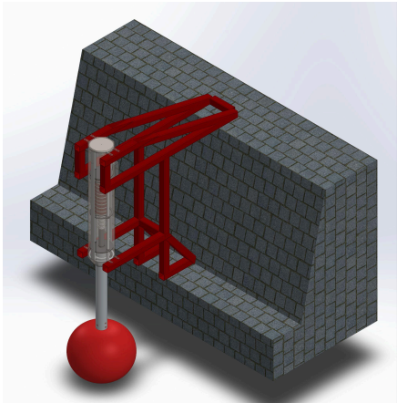
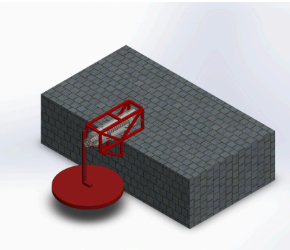

Capstone Engineering Design Project — End-to-End Renewable Ocean Energy & Linear Generator Case Study
The Philippines relies heavily on non-renewable energy sources for 79% of its needs, creating severe energy security vulnerabilities and expensive electricity. This capstone project designs, simulates, and constructs a single-buoy Wave Energy Converter (WEC) featuring a centralized linear electromagnetic generator. By optimizing the stator-translator interface with an opposed-pole neodymium configuration and ferromagnetic flux concentrators, the prototype successfully converts wave-induced motion into reliable electrical energy, generating an average power output equivalent to 4.81 kW per day when projected for continuous operation.
The Philippines faces high electricity costs and high dependency on imported fossil fuels, leaving the energy sector vulnerable to global price fluctuations. While the country possesses vast unexploited coastal wave energy potential, traditional single-buoy WECs primarily capture vertical heave motion, resulting in low capacity factors, inconsistent power output under irregular seas, and high vulnerability to structural damage in harsh marine environments.
With over 36,000 kilometers of coastline, the Philippines features abundant marine renewable energy potential. Coastal regions like Baler, Aurora exhibit favorable wave characteristics with average wave heights of 1.65 to 1.70 m and predominant wave periods of 7 to 8 seconds. Harnessing this indigenous resource through an optimized, durable, and localized wave energy converter provides a dependable renewable energy solution for off-grid and coastal communities.

Seawall-Integrated Single-Buoy Energy Converter: Mounts the linear generator housing vertically via a rigid cantilevered truss frame anchored directly to a concrete seawall, harnessing vertical wave heave without offshore mooring complexity.

Horizontally Integrated Seawall Energy Converter: Engineered to capture the horizontal push-pull surge forces of nearshore waves along the X-axis.| Criteria | Design 1 (SISBEC - Selected) | Design 2 (HI-SEC) |
|---|---|---|
| Total Cost | ₱31,203.00 | ₱36,203.00 |
| Total Weight | 82.98 kg | 86.98 kg |
| Force Inflicted to Buoy | 12.15 kN | 3.04 kN |
| Theoretical Power Output | 90.88 kW-hr/day | 6.31 kW-hr/day |
Design Alternative 1 (SISBEC) was chosen for final fabrication. It offers a 13.8% cost reduction compared to Design 2 while delivering vastly superior theoretical power output and robust structural integration through high-grade stainless steel and aluminum alloy components.
Experimental testing across multiple trials under a 7 cm wave height yielded a stable average induced voltage of 1.392 V and a current of 0.04 A, resulting in an average measured power output of 0.05568 W (projected to 4.81 kW/day for continuous operation).
The study successfully proved that an opposed-pole neodymium translator with ferromagnetic spacers effectively directs magnetic flux radially toward stator windings, eliminating dead zones and validating energy conversion efficiency. Future iterations should incorporate thinner composite housing materials to reduce air-gap magnetic resistance, integrate low-friction linear bearings to minimize sliding friction, and use automated winding systems to prevent phase cancellation.